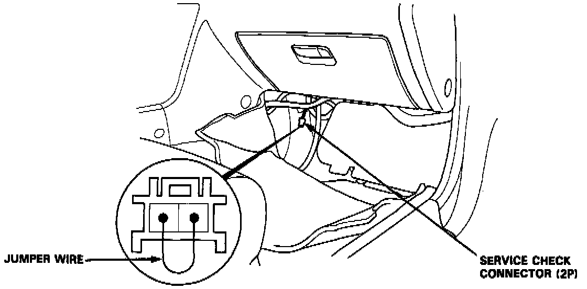
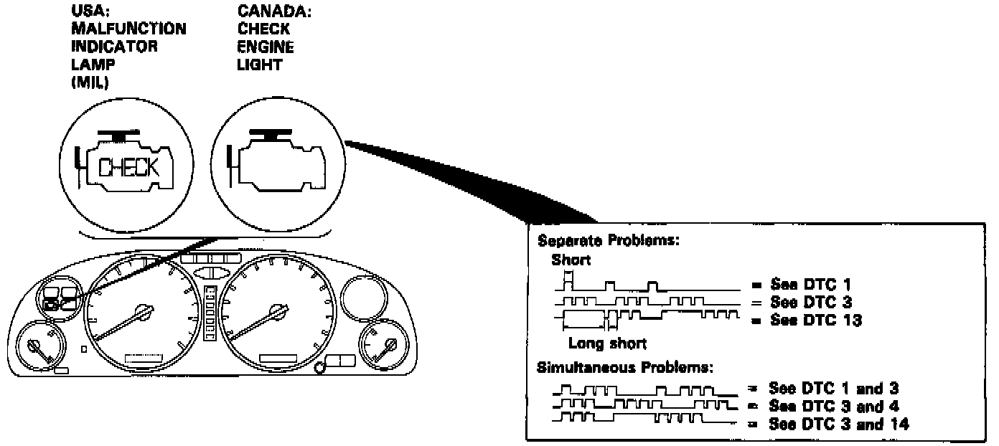

Without Scan Tool
When the Malfunction Indicator lamp (malfunction indicator lamp) has been reported on, do the following:

1. Connect the service check connector terminals with a jumper wire as shown (the service check connector (2P) is located under the dash on the passenger side of the car). Turn the ignition switch on.

2. Note the Diagnostic Trouble Code: The malfunction indicator lamp indicates a code by the length and number of blinks. The malfunction indicator lamp can indicate simultaneous component problems by blinking separate codes, one after another. Codes 1 through 9 are indicated by individual short blinks. Codes 10 through 53 are indicated by a series of long and short blinks. The number of long blinks equals the first digit, the number of short blinks equals the second digit.